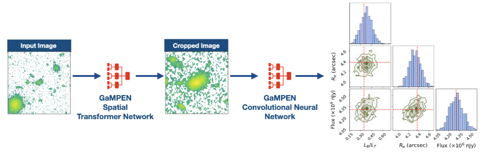

GaMPEN
Galaxy Morphology Posterior Estimation Network
The first ML framework for automatic cropping & estimating posteriors of different galaxy morphological parameters
What does GaMPEN do & Why was it needed?
Although Convolutional Neural Networks (CNNs) have used for galaxy morphology determination for quite some time now, a few challenges associated with the process has persisted. From the early attempts at using a CNN to classify galaxies morphologically to the largest ML-produced morphological catalogs currently available, most CNNs have provided broad morphological classifications. There has been very limited work on estimating morphological parameters using CNNs; and there has been no work on estimating robust uncertainties of CNN determined morphological parameters. Even popular non-ML tools like Galfit severely underestimate uncertainties by values as high as $\sim75\%$. Meanwhile, the computation of full Bayesian posteriors for different morphological parameters is crucial for drawing scientific inferences that account for uncertainty and thus are indispensable in the derivation of robust scaling relations or tests of theoretical models using morphology.
One other challenge of using CNNs in astronomy, is the necessity ot use fixed cutout sizes. Most previous work has resorted to selecting a large cutout size for which "most galaxies" would remain in the frame. However, this means that for many galaxies in the dataset, especially smaller ones, typical cutouts contain other galaxies in the frame, often leading to less accurate results. Thus, this becomes a problem when applying CNNs to galaxies over a wide magnitude and redshift range.
In order to address both these challenges, we developed GaMPEN.
Data & Code Release
GaMPEN's source code along with extensive tutorials and trained models will be released in the Fall of 2022. Come back here at that time to access all the data release resources! You can fill up this short Google Form to indicate your interest and I will notify you once the public release takes place!
However, if you have a project where you want to apply GaMPEN before that, please send an
email to aritra.ghosh (at) yale.edu and aritraghsh09 (at)
gmail.com. However, please note that we have only limited documentation available
as of now!